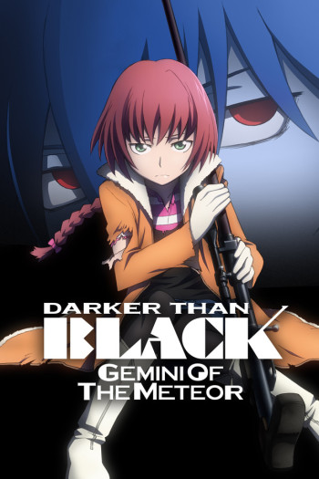

2007년 4월부터 9월까지 방영하며 특유의 세계관과 설정, 개성 넘치는 캐릭터들과 탄탄한 전개로 호평을 받은 TV 애니메이션 《DARKER THAN BLACK -흑의 계약자-》의 정식 후속작. 2009년 10월 9일부터 12월 25일까지 방영하였다. 서브 타이틀이 바뀌었음에도 불구하고 국내에선 어째서인지 DTB 2기가 아니라 흑의 계약자 2기라고 불리는 경우가 많다. 그래서 애니맥스가 신작을 발표했을 때도 다커 댄 블랙 2기(DTB 2기)로 소개했다. 또한 제미니가 쌍둥이자리를 뜻하므로 국내에서는 'DARKER THAN BLACK -유성의 쌍둥이-' 라고도 불리운다. 전작의 스토리 시발점이 일본 도쿄였다면 유성의 제미니는 '도쿄 익스플로전' 2년 후 초겨울에 접어들기 시작한 러시아 블라디보스토크에서 시작되어, 다시 도쿄에서 벌어지는 일을 다룬다. 서브 타이틀이 바뀐 만큼 주인공도 헤이보다는 쌍둥이 중 한명인 스오우 파블리첸코를 중심으로 이야기를 풀어나간다. 일종의 더블 주인공 체제. 1기와 2기 사이의 인과 헤이의 도피 시절 외전을 다룬 총 4화의 OVA가 제작되었는데, 2기의 DVD/BD 짝수권마다 영상특전으로 포함시켰다. 제목은 'DARKER THAN BLACK -GAIDEN-' 상업적 측면에서는 BD 평균 판매량이 12,152장으로 오히려 전작보다 성공하게 된다. 본즈 작품들 중에서는 강철의 연금술사 (2003), 혈계전선, 강철의 연금술사 FULLMETAL ALCHEMIST에 이어 4위. 2014년 1월 Blue-ray Box로도 발매되었는데 초동 판매량은 2천장 정도로 집계되었다.
